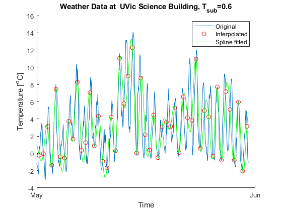
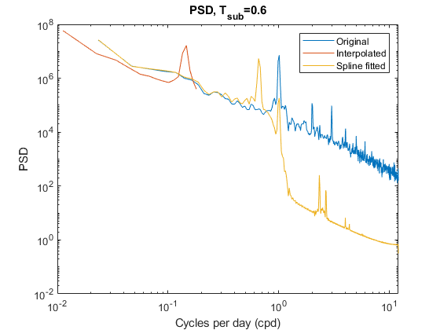
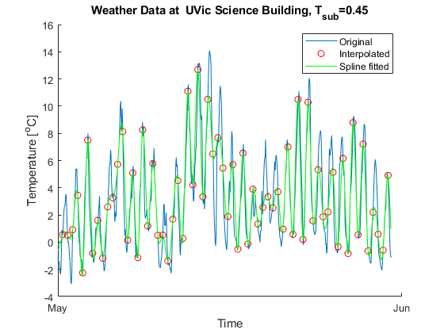
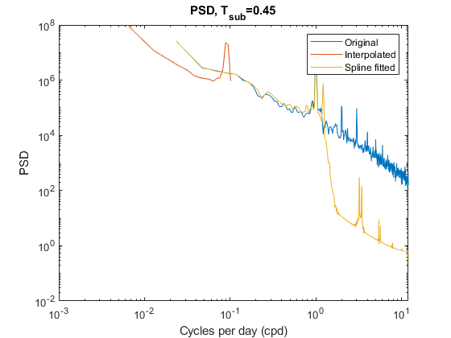

close all;
clear
hourly = "../project/data/hourly_data.dat";
station_lon = 236.69;
station_lat = 48.462;
t_start = datenum(2018,1,1,0,0,0);
t_end = datenum(2018,12,31,0,0,0);
[time, temp] = getdata(hourly, station_lon, station_lat, t_start, t_end);
nan_mask = find(~isnan(temp));
time = time(nan_mask);
temp = temp(nan_mask);
temp = temp - mean(temp);
q3(time, temp, 0.6)
q3(time, temp, 0.45)
T_sub = 0.6;
function q3(time, temp, T_sub)
samples_per_hour = 24/T_sub;
may_start = datenum(2018,5,1,0,0,0);
may_end = datenum(2018,5,31,0,0,0);
may_mask = find(time >= may_start & time <= may_end);
new_time = linspace(time(1), time(end), (time(end)-time(1))/T_sub);
new_temp = interp1(time, temp, new_time);
interp_may_mask = find(new_time >= may_start & new_time <= may_end);
splined = spline(new_time, new_temp, time);
figure()
hold on
plot(time(may_mask), temp(may_mask))
plot(new_time(interp_may_mask), new_temp(interp_may_mask), 'ro')
plot(time(may_mask), splined(may_mask), 'g-')
hold off
xlabel('Time')
ylabel('Temperature [^oC]')
title("Weather Data at UVic Science Building, T_{sub}=" + T_sub);
legend(["Original", "Interpolated", "Spline fitted"]);
datetick('x')
NFFT = 2^10;
short_NFFT = 2^5;
[pxx, f] = pwelch(temp, NFFT, NFFT/2, NFFT, 1/3600);
[pxx_interp, f_interp] = pwelch(new_temp, short_NFFT, short_NFFT/2, short_NFFT, 1/3600*T_sub/samples_per_hour);
[pxx_spline, f_spline] = pwelch(splined, NFFT, NFFT/2, NFFT, 1/3600);
s_to_day = 60*60*24;
figure()
loglog(f * s_to_day, pxx);
hold on
loglog(f_interp .* s_to_day, pxx_interp);
loglog(f_spline .* s_to_day, pxx_spline);
xlabel('Cycles per day (cpd)')
ylabel('PSD')
title("PSD, T_{sub}=" + T_sub)
legend(["Original", "Interpolated", "Spline fitted"]);
end
function [times, temps] = getdata(path, lon, lat, time_start, time_end)
data = load(path);
[hour_rows, hour_cols] = size(data);
all_times = data(3:hour_rows,1);
station_lon_all = data(1,2:hour_cols);
station_lat_all = data(2,2:hour_cols);
temperature_data_all = data(3:hour_rows,2:hour_cols);
diff_lon = abs(station_lon_all - lon);
diff_lat = abs(station_lat_all - lat);
[~, station_index] = min(diff_lon+diff_lat);
station_temps = temperature_data_all(:,station_index);
index = find(all_times >= time_start & all_times <= time_end);
times = all_times(index);
temps = station_temps(index);
end
   